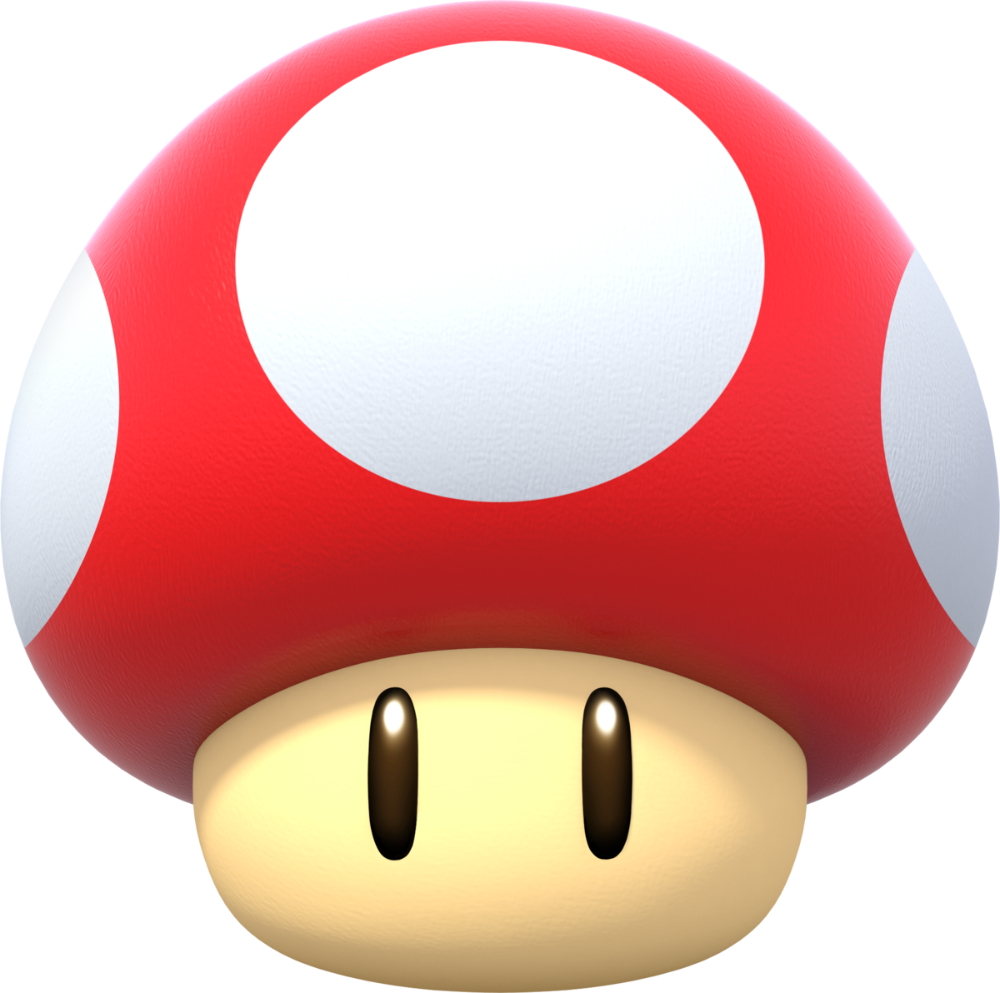
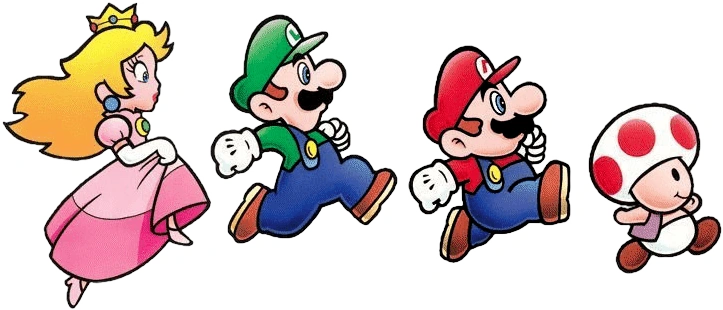
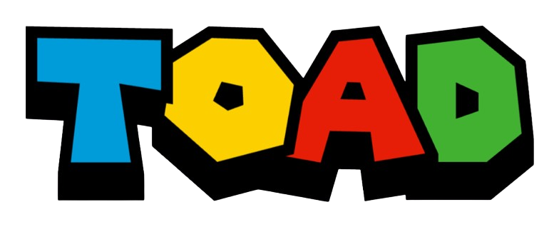
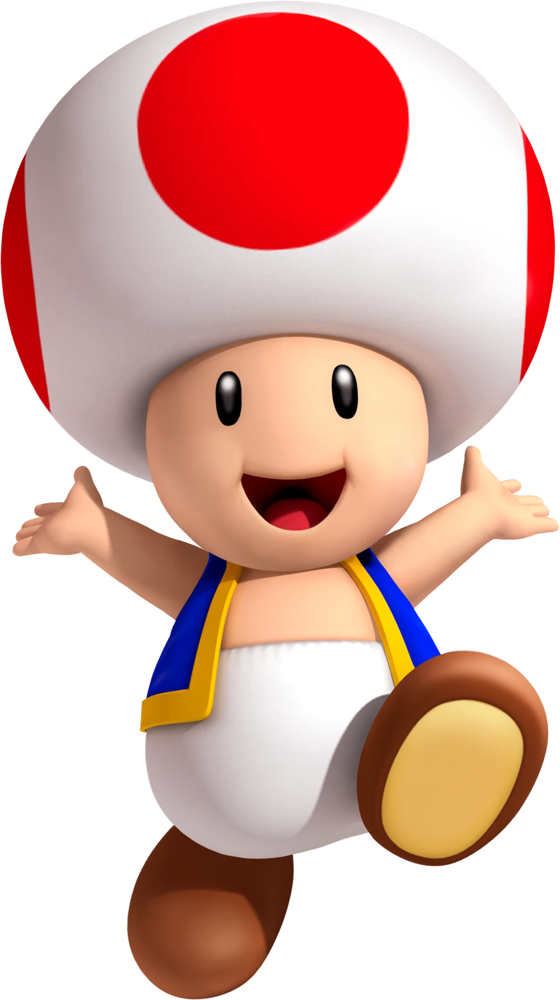
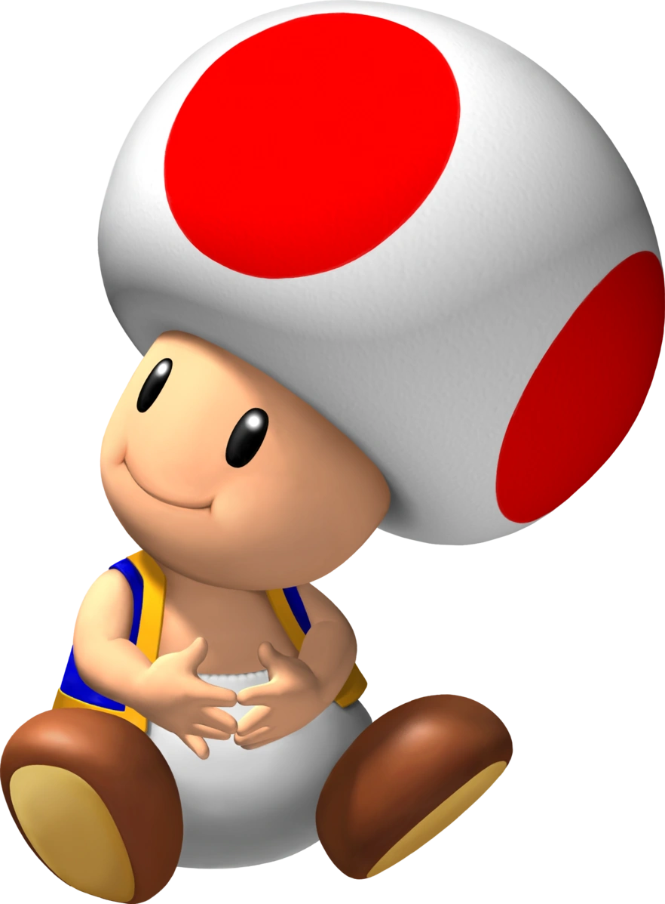

PLAYABLE SINCE 1988
Toad became a playable character in Super Mario Bros. 2 in 1988. He was the fastest at running and picking up objects, but his short jump made him trickier to use in some stages.



SCROLL DOWN TO MEET TOAD ↓

Toad is a well-known resident of the Mushroom Kingdom who frequently helps Mario and Princess Peach. He is cheerful, loyal, and brave, and he also appears as an adventurer in Captain Toad.

Toad became a playable character in Super Mario Bros. 2 in 1988. He was the fastest at running and picking up objects, but his short jump made him trickier to use in some stages.
In Super Mario Bros. 2, every character had different strengths. Toad could move and lift objects especially quickly, making his gameplay surprisingly different from Mario, Luigi and Peach.
Toad took centre stage in Wario's Woods in 1994, where he had to stop Wario from taking over the woods. It was a rare early Mario spin-off where Toad, rather than Mario, was the main hero.
Toad was already part of the original Super Mario Kart roster in 1992. Since then, he has appeared across many Mario spin-offs, including racing, sports and party games.
"Toad" can be confusing because it refers both to the familiar character and to the wider species of mushroom-headed people living in the Mushroom Kingdom. That is why you often see many Toads with different coloured spots throughout the games.
Click the block to earn coins!
The classic red-spotted Toad design dates back to Super Mario Bros. in 1985, where Mushroom Retainers were held captive in Bowser's castles.
FIRST APPEARANCE SUPER MARIO BROS. • 1985